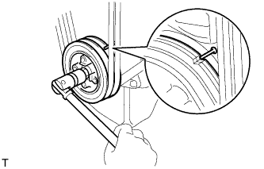
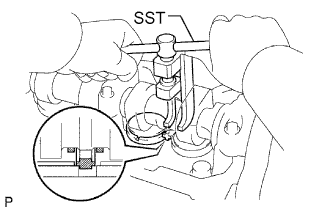
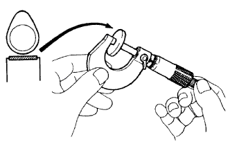

ЗАЗОР В ПРИВОДЕ КЛАПАНОВ > РЕГУЛИРОВКА |
| 1. REMOVE RESONATOR WITH AIR CLEANER CAP SUB-ASSEMBLY |
 |
Disconnect the sensor connector.
Detach the wire harness clamp.
Loosen the hose clamp and remove the resonator with air cleaner cap.
 |
Detach the 4 hook clamps, and then remove the air cleaner cap and resonator with air cleaner cap.
| 2. REMOVE INTAKE AIR CONNECTOR SUB-ASSEMBLY |
 |
Loosen the hose clamp and remove the 2 bolts and intake pipe.
| 3. REMOVE CYLINDER HEAD COVER SUB-ASSEMBLY |
Remove the 9 bolts, nut, cylinder head cover and gasket.
| 4. SET NO. 1 CYLINDER TO TDC/COMPRESSION |
|  |
Turn the crankshaft pulley and align its groove with the timing pointer.
Check that the valve lifters for the No. 1 cylinder are loose and the valve lifters for the No. 4 cylinder are tight.
If not, turn the crankshaft 1 revolution (360°) and align the mark as above.
| 5. INSPECT VALVE CLEARANCE |
 |
Check only the valves indicated in the illustration.
Using a feeler gauge, measure the clearance between the valve lifter and camshaft.
| Item | Specified Condition |
| Intake | 0.20 to 0.30 mm (0.00787 to 0.0118 in.) |
| Exhaust | 0.40 to 0.50 mm (0.0158 to 0.0197 in.) |
| *1 | No. 1 EX |
| *2 | No. 3 EX |
| *3 | No. 1 IN |
| *4 | No. 2 IN |
Record the out-of-specification valve clearance measurements. They will be used later to determine the required replacement adjusting shim.
Turn the crankshaft 1 revolution (360°) and align the mark as above.
 |
Check only the valves indicated in the illustration.
| *1 | No. 2 EX |
| *2 | No. 4 EX |
| *3 | No. 3 IN |
| *4 | No. 4 IN |
Using a feeler gauge, measure the clearance between the valve lifter and camshaft.
| Item | Specified Condition |
| Intake | 0.20 to 0.30 mm (0.00787 to 0.0118 in.) |
| Exhaust | 0.40 to 0.50 mm (0.0158 to 0.0197 in.) |
Record the out-of-specification valve clearance measurements. They will be used later to determine the required replacement adjusting shim.
| 6. ADJUST VALVE CLEARANCE |
|  |
Remove the adjusting shim.
Turn the crankshaft so that the cam lobe of the camshaft on the valve being adjusted points upward.
Using SST, press down the valve lifter.
Position the notch of the valve lifter so that it faces the exhaust manifold side.
 |
Remove the adjusting shim with a screwdriver and magnet hand.
|  |
Determine the replacement adjusting shim size according to the formula and charts below.
Using a micrometer, measure the thickness of the removed shim.
Calculate the thickness of a new shim so that the valve clearance comes within the specified value.
T = Thickness of removed shim
A = Measured valve clearance
N = Thickness of new shim
| Intake | N = T + (A - 0.25 mm (0.00984 in.)) |
| Exhaust | N = T + (A - 0.45 mm (0.0177 in.)) |
Select a new shim with a thickness as close as possible to the calculated value.

| *1 | Adjusting Shim Selection Chart (Intake) | *2 | Removed shim thickness mm (in.) |
| *3 | Measure clearance mm (in.) | - | - |
| Shim No. | Thickness | Shim No. | Thickness |
| 01 | 2.50 (0.0984) | 46 | 2.95 (0.116) |
| 42 | 2.55 (0.100) | 26 | 3.00 (0.118) |
| 06 | 2.60 (0.102) | 47 | 3.05 (0.120) |
| 43 | 2.65 (0.104) | 31 | 3.10 (0.122) |
| 11 | 2.70 (0.106) | 48 | 3.15 (0.124) |
| 44 | 2.75 (0.108) | 36 | 3.20 (0.126) |
| 16 | 2.80 (0.110) | 49 | 3.25 (0.128) |
| 45 | 2.85 (0.112) | 41 | 3.30 (0.130) |
| 21 | 2.90 (0.114) |

| *1 | Adjusting Shim Selection Chart (Exhaust) | *2 | Removed Shim Thickness mm (in.) |
| *3 | Measure Clearance mm (in.) | - | - |
| Shim No. | Thickness | Shim No. | Thickness |
| 01 | 2.50 (0.0984) | 46 | 2.95 (0.116) |
| 42 | 2.55 (0.100) | 26 | 3.00 (0.118) |
| 06 | 2.60 (0.102) | 47 | 3.05 (0.120) |
| 43 | 2.65 (0.104) | 31 | 3.10 (0.122) |
| 11 | 2.70 (0.106) | 48 | 3.15 (0.124) |
| 44 | 2.75 (0.108) | 36 | 3.20 (0.126) |
| 16 | 2.80 (0.110) | 49 | 3.25 (0.128) |
| 45 | 2.85 (0.112) | 41 | 3.30 (0.130) |
| 21 | 2.90 (0.114) |
Install a new adjusting shim.
Install a new adjusting shim to the valve lifter.
Remove SST.
Recheck valve clearance.
| 7. INSTALL CYLINDER HEAD COVER SUB-ASSEMBLY |
Remove any old packing (FIPG material).
 |
Apply seal packing to the cylinder head as shown in the illustration.
| *1 | Seal Packing |
Install the gasket to the cylinder head cover.
Install the cylinder head cover with the 9 bolts and nut. Uniformly tighten the bolts and nut in several steps.
| 8. INSTALL INTAKE AIR CONNECTOR SUB-ASSEMBLY |
Install the intake pipe with the 2 bolts.
Tighten the intake pipe clamp.
| 9. INSTALL RESONATOR WITH AIR CLEANER CAP SUB-ASSEMBLY |
Вставьте петли крышки воздушного фильтра и шланг в корпус воздушного фильтра, а затем закрепите 4 откидных защелки.
Установите крышку воздушного фильтра и закрепите ее зажимом.
Закрепите зажим жгута проводов.
Подсоедините 2 зажима и разъем.
| 10. INSPECT ENGINE IDLE SPEED |
Warm up the engine.
When using the intelligent tester:
Connect the intelligent tester to the DLC3.
 |
When not using an intelligent tester:
Using SST, connect the tachometer test probe to terminal 9 (TAC) of the DLC3.
| *a | Front View of DLC3 |
| 11. INSPECT MAXIMUM ENGINE SPEED |
Start the engine.
Fully depress the accelerator pedal.
Check the maximum speed.